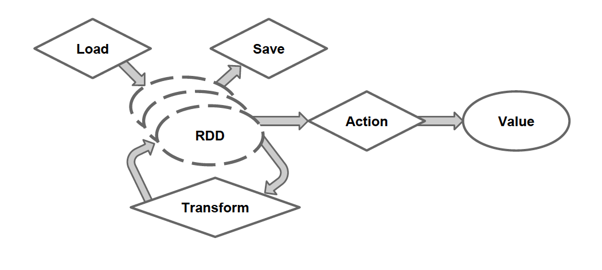

Getting to Know Scala
for Data Science
@TheTomFlahertyBio:
I have been a Chief Architect for 20 years, where he first become enamored by Scala in 2006. Over the years I have written a symbolic math application in Scala at Glaxo in 2008 for molecular dynamics and in 2010 I formed the Front Range Polyglot Panel and participated as its Scala expert.
Abstract
- Scala has gained a lot of traction recently,
- Especially in Data Science with:
- Spark
- Cassandra with Spark Connector
- Kafka
So what are Scala's success factors for Data Science?
- A Strong Affinity to Data
- Functional Programmming with Streaming
- That is Capable of Mirroring Math Syntax
- But only if programmers strive for it
- Awesome Concurrency under the Covers
- The Spark Ecosystem
- A vibrant Open Source comminity around Typesafe and Spark
Outline
- Introduction to Scala
- About
- Class Declarations
- Functions
- Processing Collections
- Methods on Collections
- For Comprehensions
- What Data Likes:
- To Be a First Class Citizen
- To Assert Its Identity
- To Remain Intact
- Pattern Matching
- Revealing Data
- Sharing Contents
- Derivative
- What do Data Scientist Like
- A Universal Data Representation
- To Simulate Things All at Once
- Data Driven Results
- To Orchestrate Processing
- Spark
- Architecure
- RDD Resilient Distributed Data
- RDD Workflow
- Processing Steps
- Orchestrations
- Word Count
- Machine Learning
- Kafka Spark Cassandra
- Grand Finale
- References
Introduction
About Scala
- State of the Art Class Hierarchy + Functional Programming
- Fully Leverages the JVM
- Concurrency from Doug Lea
- JIT (Just IN Time) inlines functional constructs
- Comparable in speed to Java ±3%
- Interoperates with Java
- Can use any Java class (inherit from, etc.)
- Can be called from Java
- Statically Typed
- Type inference
Class and object Declarations
// [T] is a parameterized type for typing the contents with a class
// You can parameterize a class with many types [T,U,V]
// You can embed parameterized types [Key,List[T]]
trait Trait[T]{...}
abstract class Abs[T]( i:Int ) extends Trait[T]{...}
class Concrete[T]( i:Int ) extends Abs[T]( i:Int) {...}
case class Case[T]( i:Int )
class Composite[T]( i:Int ) extends Abs[T]( i:Int)
with Trait1[T] with Trait2[T] {...}
Functions
( x:Int ) => x + 2 // full version
x => x + 2 // type inferred
_ + 2 // placeholder syntax
def addTwo( x:Int ) : Int = x + 2 // Regular Function
Processing a List Collection
val list = List(1, 2, 3) // Scala infers an immutable List[Int]
list.foreach( x => println(x) ) // prints 1, 2, 3
list.foreach( println ) // same
list.map( x => x + 2 ) // returns a new List(3, 4, 5)
list.map( _ + 2 ) // same
list.filter( x => x % 2 == 1) // returns a new List(1, 3)
list.filter( _ % 2 == 1 ) // same
list.reduce( (x,y) => x + y ) // => 6
list.reduce( _ + _ ) // Placeholder syntax
// Be expressive self documenting - Use placeholder syntax judiciously
Functional Methods on Seq[T] Collections
| Method on Seq[T] | Description |
|---|---|
map( f:T => U ) : Seq[U] | Each element is result of f |
flatMap( f:T => Seq[U] ) : Seq[U] | f returns a seq for each element that are flatten into result |
filter( f:T => Boolean ) : Seq[T] | Keep only elements where f is true |
exists( f:T => Boolean ) : Boolean | True if one element passes f |
forall( f:T => Boolean ) : Boolean | True if all elements pass f |
groupBy( f:T => Key ) : Map[Key,Seq[T]] | Group elements into a Key Seq Map |
reduce( f:(T,T) => T ) : T | Summarize elements using an f with two arg |
.... | ... many more methods |
For Comprehensions
Let's Ask Data What It Likes:
| Data Likes | Scala Feature |
|---|---|
| Being a First Class Citizen | Primitives As Classes |
| To Assert its Identity | Strong Typing |
| To Stay Intact | Immutability |
| To Reveal Its Contents | Pattern Matching |
| To Share its Contents | Case Classes |
| Resilient Packaging | Monads |
Data is First Class Citizen
with Scala's Class Hierarchy
Any
AnyVal // Scala's base class for Java primitives and Unit
Double Float Long Int Short Char Byte Boolean Unit
scala.Array // compiles to Java arrays [] most of the time
AnyRef // compiles to java.lang.Object
String // compiles to java.lang.String
(all other Java Classes ...)
scala.ScalaObject
(all other Scala Classes ...)
scala.Seq // base Class for all ordered collections
scala.List // Immutable list for pattern matching
scala.Option // Yields to Some(value) or None
scala.Null // is a subtype for all AnyRef classes
// For Java compatibility. Better to use Option
scala.Nothing // is a subtype of all Any classes. A true empty value
5.toString() is valid because 5 is an object
Asserting Identity with Types
Staying Intact - Immutability
Revealing Contents
Sharing Contents
OO Encapsulation Got it All Wrong
Pattern Matching
with Case Classes
Message Interogation using
Pattern Matching with Scala Actors
What Do Data Scientists Like?
| Scientists Like | Spark Feature |
|---|---|
| A Universal Data Representation | RDD Resilent Distributed Data |
| To Simulate Things All at Once | Concurrency |
| Data Driven Results | Pattern Matching |
| To Orchestrate Processing | Streams |
Your Code
Spark Streaming of RDDs
RDD Resilient Distributed Data
RDD Workflow
Transformations
- Create a new dataset from an existing one
- All transformations in Spark are lazy
- They do not compute their results right away
- Instead they remember the applied transformations
- In Order To
- optimize the required calculations
- recover from lost data partitions
Transformation Methods
map[U]( f:(T) => U ) : RDD[U]
flatMap[U]( f:(T) => Seq[U] ) : RDD[U]
filter( f:(T) => Boolean ) : RDD[T]
keyBy[K]( f:(T) => K ) : RDD[(K,T)]
groupBy[K]( f:(T) => K ) : RDD[(K,Iterable[T])]
glom( ) : RDD[T]
distinct( ) : RDD[T]
intersection( rdd:RDD[T] ) : RDD[T]
subtract( rdd:RDD[T] ) : RDD[T]
union( rdd:RDD[T] ) : RDD[T]
cartesian[U]( rdd:RDD[U] ) : RDD[(T,U)]
zip[U]( rdd:RDD[U] ) : RDD[(T,U))
sample( r:Boolean, f:Double, s:Long ): RDD[T]
pipe(command: String): RDD[String]
coalesce( numPartitions: Int, shuffle: Boolean ) : RDD[T]
mapPartitions
reduceByKey
aggregateByKey
sortByKey
join
repartition
coalesce
cogroup
Transformation Methods
| sample(withReplacement: Boolean, fraction: Double, seed: Long = Utils.random.nextLong): RDD[T] | sample a fraction fraction of the data, with or withoutreplacement, using a given random number generatorseed |
| union(otherDataset) | return a new dataset that contains the union of the elements in the source dataset and the argument |
| distinct([numTasks])) | return a new dataset that contains the distinct elements of the source dataset |
Transformation Methods
Transformation Methods
Transformation Methods
(Java and Scala)
(Java and Scala)
SparkContext.objectFile(). Note: modifying variables other than Accumulators outside of the
foreach() may result in undefined behavior. See Understanding closures for more details.Transformation Methods
| cartesian[U](other: RDD[U]) : RDD[(T,U)] | collect[U](f: PartialFunction[T, U]): RDD[U] | |
| distinct(): RDD[T] | filter(f: (T) ⇒ Boolean): RDD[T] | flatMap[U](f: (T) ⇒ TraversableOnce[U])(implicit arg0: ClassTag[U]): RDD[U]|
| glom(): RDD[Array[T]] | groupBy[K](f: (T) ⇒ K)(implicit kt: ClassTag[K]): RDD[(K, Iterable[T])] | intersection(other: RDD[T]): RDD[T] |
| keyBy[K](f: (T) ⇒ K): RDD[(K, T)] | map[U](f: (T) ⇒ U)(implicit arg0: ClassTag[U]): RDD[U] | |
| union(other: RDD[T]): RDD[T] | zip[U](other: RDD[U])(implicit arg0: ClassTag[U]): RDD[(T, U)] | |
Action Methods
| collect(): Array[T] | count(): Long | |
| fold(zeroValue: T)(op: (T, T) ⇒ T): T | reduce(f: (T, T) ⇒ T): T | take(num: Int): Array[T] |
| max()(implicit ord: Ordering[T]): T | min()(implicit ord: Ordering[T]): T | subtract(other: RDD[T]): RDD[T] |
| takeOrdered(num: Int)(implicit ord: Ordering[T]): Array[T] | takeSample(withReplacement: Boolean, num: Int, seed: Long = Utils.random.nextLong): Array[T] | top(num: Int)(implicit ord: Ordering[T]): Array[T] |
SAve Methods
| saveAsObjectFile(path: String): Unit | f saveAsTextFile(path: String): Unit | |
Processing Steps
Data Driven Results
Pattern Matching
Orchestration
Word Count
val f = sc.textFile("README.md")!
val wc = f.flatMap(l => l.split(" ")).map(word => (word, 1)).reduceByKey(_ + _)!
wc.saveAsTextFile("wc_out")
Machine Learning
Kafka Spark Cassandra
Grand Finale
References
- Big Data Driving Businesshttp://bit.ly/194auY9
- REST API Tutorialhttp://www.restapitutorial.com/resources.html
- CAP Theoremhttp://en.wikipedia.org/wiki/CAP_theorem
- Grid Gainhttp://www.gridgain.com/
- Apache Sparkhttps://spark.apache.org/
- The Reactive Manifestowww.reactivemanifesto.org/
- These slides in PDFhttps://speakerdeck.com/axiom6